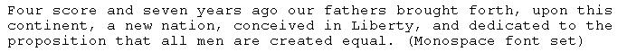
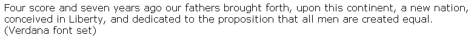
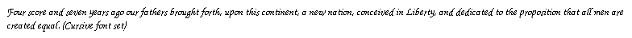
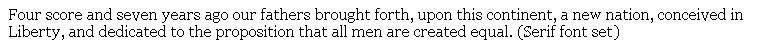
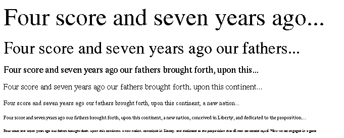

Design Awareness
By Mark Seymour
Type casting
The display of text is so common that we rarely think about it, until something goes wrong. In spite of automated spell-checkers, typos [typographical errors, commonly misspelled words] still appear in newspapers and advertising, and poorly constructed sentences are rife, even in literate journals.
Yet the proper display of words is more than just the use of correct spelling and grammar, and carefully lining up paragraphs, one above another. The choice of font is crucial to giving your words their proper meaning, but rarely do we see the 'perfect' font used for anything other than an art book. Even the gamut of fonts typically loaded into a web design program, as limited as it might appear relative to the thousands (if not tens of thousands) of fonts available in print, is rarely fully utilized.
A paragraph in one font can seem quite different than in another. We'll use a portion of our trusty Gettysburg Address to illustrate the difference:




This shows how the space occupied by the same words changes with the font, along with the 'feel' of the words themselves; the cursive font, of course, mimics the original handwritten Address, but even just the addition of serifs (the little flat bits at the ends of the letters, for those who didn't take graphic design in college) renders the words more 'antique' in feel.
Size and style and color, as well, change our response to a given word or phrase. The simple word fire, set in the same font as the rest of the paragraph, hardly rates a second look, even in italics. But change a few attributes, and you can't miss it:
Fire!
Without context we don't know if you're being urged to leave the building because of an incendiary incident in another room, ordered to launch artillery into the next jurisdiction, or required to separate a member of your department from their paycheck, but at least it's a start. Note that, by moving it into the center of the line, we've also changed it from merely a very large line of red text into what appears to be a headline of some sort. The reader's natural expectation would be that this paragraph should have some connection to or explanation of what, exactly, this fire thing is all about. When playing with type, remember that you're also playing with the preexisting assumptions of your audience; give them a typographic cue that conflicts with the associated information, and they can either shake their heads (literally as well as figuratively) in bewilderment, or click out of your site in irritation. Break visual conventions if you dare, but determine the consequences before you put them where the world can see them.
While columns or grids are the natural layout form in nearly all printed materials, the web has only recently been made column-friendly, and it's still far more difficult to prepare and reliably display multi-column pages in HTML than in print. (See last month's column for an in-depth analysis of the use of grid.) The single column web page is by far the most common form seen on the Internet, but even here there is a wide variety.
The worst possible column structure is one wide column. Many websites are guilty of this, some of them designed by agencies and designers experienced enough to know better. (The Linux Gazette itself, for one, though it's constrained by the need to be compatible with text-only browsers and the visually impaired using text-to-speech translators.) It's easy and it's fast, but it's still wrong. The single wide column is a bad thing because of human eyesight and perception: our eyes and brain are wired to scan large sweeps of landscape and pick up moving targets, whether prey or threat. Focusing on long lines of minute bits of information, while possible, isn't what we're evolved to handle. It's why the monks transcribing religious texts in the Middle Ages went blind, why the accountants of Dickens' time wore glasses, and why your eyes hurt after staring at the computer screen all day.
We process the visible world by both broad and subtle eye movements; holding our eyes still is unnatural. Stare at any single word on this screen for only a few moments, and notice how the text around it becomes unreadable. Yet move your eyes rapidly along a line of text, and even the words you're scanning are unreadable. It's not that you don't see the letters, it's that your brain can't process them into understandable words fast enough to keep up with your eyes. We see words by recognizing the shapes of groups of letters, rather than parsing them individually; that's why we can play the mind games of turning the internal letters of words around (the sheap of wrods bieng moer improtnat tahn teh acutal lettre oredr) or even obscuring the letters themselves (ax hxppxns whxn thx lettxrs in illxmxnatxd sixns go out). Note that it's easier to read words that have lost or misplaced their vowels rather than their consonants; that's because vowels all have the same height and general shape (aeiou), where consonants occupy more of the line space (bdfghjklpqty) and have more varied shapes (cmnrsvwxz).
So what happens when you scan a long line length? Your brain loses its place. Your eyes get lost in the letter shapes, and often move up or drop down a line. Then your brain can't follow the word order, and the reading process comes to a halt. You have to restart farther back, where you can remember the words you're seeing, and try again.
Let's look at some examples of how line length affects readability, again using Lincoln's words (though I've held the paragraphs to four lines to save space):
Four score and seven years ago our fathers brought forth, upon this continent, a new nation, conceived in Liberty, and dedicated to the proposition that all men are created equal. Now we are engaged in a great civil war, testing whether that nation, or any nation, so conceived, and so dedicated, can long endure.
Four score and seven years ago our fathers brought forth, upon this continent, a new nation, conceived in Liberty, and dedicated to the proposition that all men are created equal. Now we are engaged in a great civil war, testing whether that nation, or any nation, so conceived...
Four score and seven years ago our fathers brought forth, upon this continent, a new nation, conceived in Liberty, and dedicated to the proposition that all men are created equal. Now we are engaged in a great civil war, testing whether that nation...
Four score and seven years ago our fathers brought forth, upon this continent, a new nation, conceived in Liberty, and dedicated to the proposition that all men are created equal. Now we are engaged in a great...
Four score and seven years ago our fathers brought forth, upon this continent, a new nation, conceived in Liberty, and dedicated to the proposition that all men are created equal.
Four score and seven years ago our fathers brought forth, upon this continent, a new nation, conceived in Liberty, and dedicated...
Four score and seven years ago our fathers brought forth, upon this continent, a new nation, conceived...
Four score and seven years ago our fathers brought forth...
One of these paragraphs is the best readable length for the font size displayed on your screen; given all of the variables in OS and browsers, I couldn't possibly pick which one is the 'right' length. But just because highly technical text is commonly displayed using long lines and poetry is displayed with short ones, don't assume that either is 'correct'; pick the right length for your eye, no matter the subject matter.
Another variable that affects readability is the alignment of the paragraphs themselves. Flush left, for non-Hebrew or -Arabic readers, is the most common alignment, with flush right used frequently for emphasis, while more than a few centered lines rapidly become confusing to the eye:
Four score and seven years ago our fathers brought forth, upon this continent, a new nation, conceived in Liberty, and dedicated to the proposition that all men are created equal.
Four score and seven years ago our fathers brought forth, upon this continent, a new nation, conceived in Liberty, and dedicated to the proposition that all men are created equal.
Four score and seven years ago our fathers brought forth, upon this continent, a new nation, conceived in Liberty, and dedicated to the proposition that all men are created equal.
Justified text, where the paragraphs are flush along both left and right edges with space added between words to make them so (as in newspapers and most magazines), can readily contribute to poor readability as line lengths gets longer; the lack of variability in the placement of the line endings makes keeping your place even harder. I would show you the difference, but HTML hasn't figured out how to easily make justified lines yet...
[ Actually, HTML 4.0 (and possibly earlier versions as well) specifies <p align="justify"> as one of the options. -- Ben ]
Font size (along with the font itself) plays a huge role in how many characters can be displayed in the line, and thus the proper line length to use:

Just as many lines of the largest type would be hard to read, even a single line of the smallest would be impossible without a magnifier. (On the web, of course, you can cheat and rely on the magnification abilities of the browser, but it's not a pleasant way to read a page.)
Many design books offer the 'right' number of characters to use in a given line, but the right number is the one that looks right. A particular font, in a particular weight and style and color, on a particular background (a color or pattern can seriously alter readability) will have its own proper character count for the perfect line. How often can you achieve perfection? Rarely. But you have to strike the proper balance, where the readability is high yet the text fits the available space. There's nothing worse than getting to the bottom of a page, whether print or web, and having words left over.
Here are some URLs for sites that handle line lengths (column widths in the print world, tables or block indents in HTML) in very different ways; some of them handle it with CSS structures, and some with straight single columns. Use them to determine how you want to display the text in your next project:
http://www.state.gov/secretary/rm/37487.htm
http://www.nasm.si.edu/exhibitions/current.cfm
http://www.seal.com/bio/index.cfm
http://www.stevenseagal.com/aikido.html
http://www.caymanislands.co.uk/to_do/watersports.asp
http://www.bartonpartners.com/BA_Links/BACareers.html
http://www.fordvehicles.com/fordgt/bulletin_detail.asp?type=news&id=1
http://www.britishairways.com/travel/baggag/public/en_gb?prim=custsupp
http://www.albinmarine.com/40cutter/40cutter.html
I started doing graphic design in junior high school, when it was still
the Dark Ages of technology. Bill Gates and Steve Jobs were both eleven
years old, and the state of the art was typing copy on Gestetner masters.
I've worked on every new technology since, but I still own an X-acto knife
and know how to use it.
I've been a freelancer, and worked in advertising agencies, printing
companies, publishing houses, and marketing organizations in major
corporations. I also did a dozen years [1985-1997] at Apple Computer; my
first Macintosh was a Lisa with an astounding 1MB of memory, and my current
one is a Cube with a flat screen.
I've had a website up since 1997, and created my latest one in 2004. I'm
still, painfully, learning how web design is different from, but not
necessarily better than, print.
![[BIO]](../gx/authors/seymour.jpg)